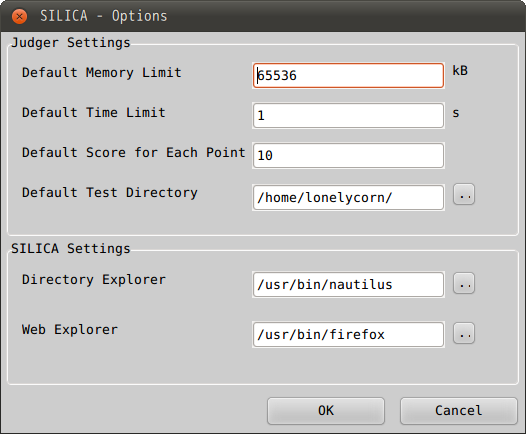
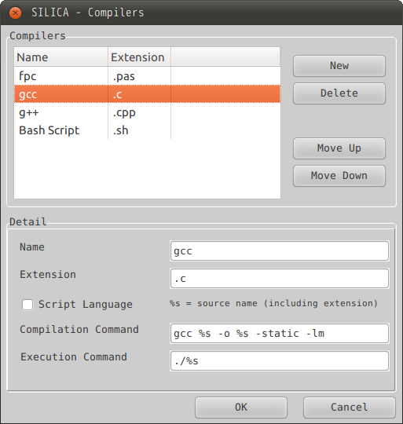

Before you start the first contest, you had better check the options,
since the options generated by SILICA may not be compatable with your operating system.
To view the options, click "Options"->"Options" in the main menu or hit "Ctrl+P" to open the Options Dialog, which may seem like this:
The meanings are listed as follows:
Click the OK button to apply the changes and close the form. Click the Cancel button to discard the changes and close the form.
When compiling the source code submitted, SILICA will try the registered compilers in sequence.
SILICA offers four compilers by default: fpc, gcc, g++ and bash scripts. You can add some custom compilers.
To open the "Compilers" dialog, click "Options"->"Compilers" in the main menu. The dialog may seem like this:

You can register a new compiler by clicking the New button.
You can erase the highlighted registration by clicking the Delete button.
You can change the order of the highlighted compiler by clicking the Move Up and
When one item in the list is highlighted, the detailed information will be shown in the "Detail" panel. The meanings are listed as follows:
fpc %s -o%s -XS%s will be replaced by $(source)$(extension), and the second %s will be replaced by $(source), where $(source) is the text in the "Source File" field of the data configuration,
and $(extension) is the text in the "Extension" filed of the compiler.
./%s%s will be replaced by $(source), where $(source) is the text filled in the "Source File" section of the data configuration.
Click the OK button to apply the changes and close the form. Click the Cancel button to discard the changes and close the form.